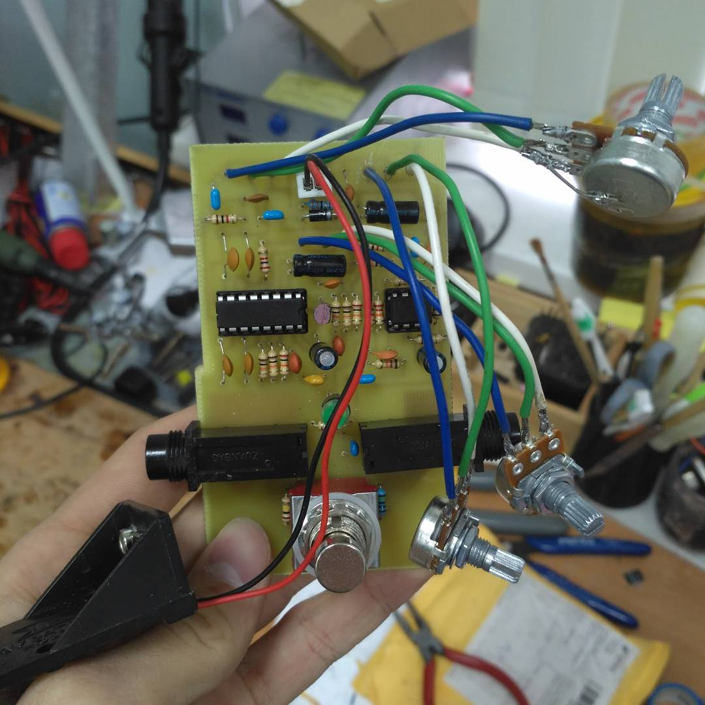
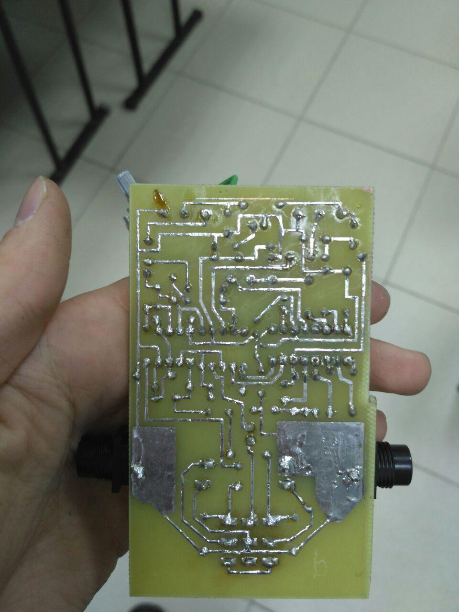
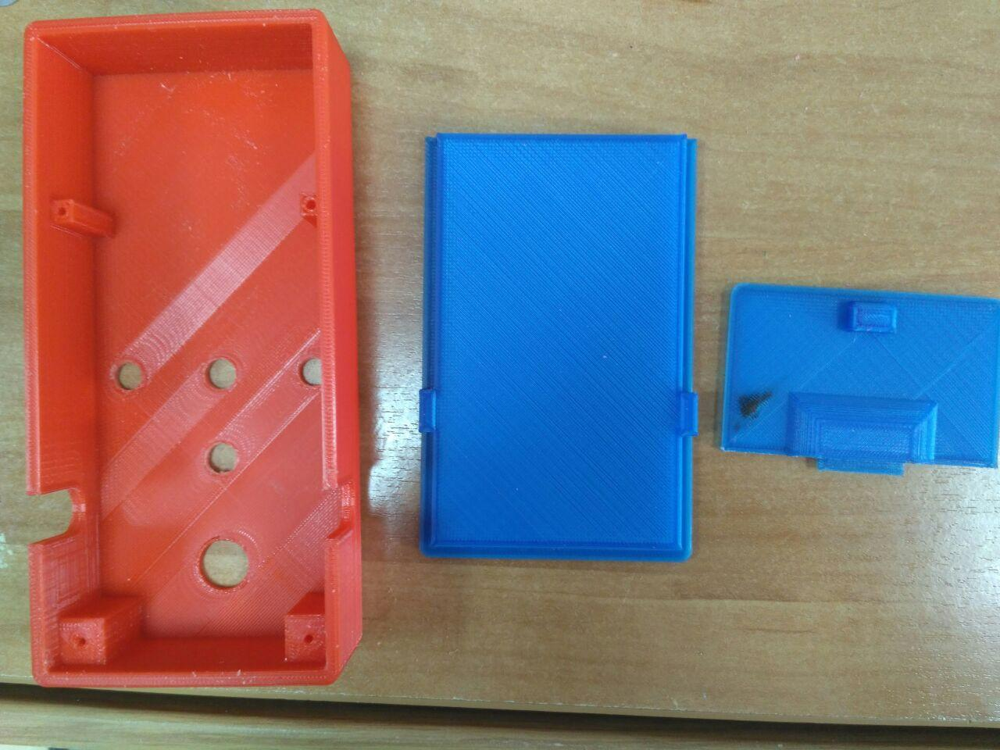
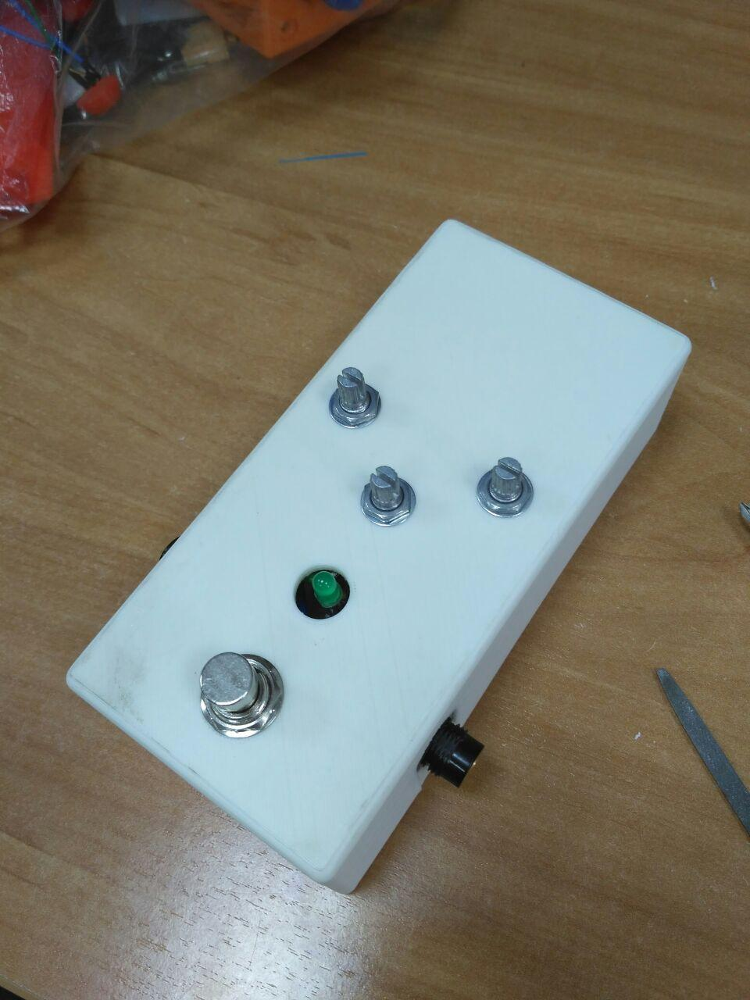

Я немного умею играть на гитаре. Как любому гитаристу мне хотелось свой педалборд, но будучи студентом второго курса денег на такое у меня не было. "Но ведь я студент робототехники, что я, не спаяю что-ли?" подумал я и пошёл учиться с какой стороны держать паяльник.
Мне очень хотелось поглубже разобраться в электронике и схемотехнике, а потому изначально планы были наполеоновские - разработать схему с нуля и самим. А ещё я тогда кроме закона Ома и Джоуля-Ленца ничего толком не знал. Очевидно пришлось планы сделать скромнее.
В итоге я решил сделать педаль delay, чтобы воспроизводить "космические" звуки, да и в целом эффект классный, что ещё нужно. И план сформировался следующий:
Здесь был найден проект, где приведена принципиальная схема и разводка платы и даже список компонентов. Там я взял разводку на большой плате, чтобы было проще делать. Купил нужные компоненты, при том кнопка оказалась самой дорогой и нераспространённой деталью из набора. Видимо такими вещами пользуются только гитаристы. Затем под купленные компоненты исправил схему (например, "джеки" у меня были совсем другие, о чем я потом пожалел).
Разобраться в схеме на тот момент у меня не получилось вовсе. Кто знал, что операционные усилители это сложно и хорошо бы курс электроники пройти сначала. Я тогда познакомился с пассивными фильтрами, стабилизаторами напряжения, что такое pull-up/pull-down. Более-менее понял как читать схемы. Это мне потом всё сильно пригодилось на парах по электротехнике, электронике и когда я собирал электронику для квестов.
Плату эту я делал конечно ЛУТом, в студенческой лаборатории, где ребята таким чуть-ли не каждый день занимались. Удивительно, но получилось буквально с первого раза и затем был процесс пайки. Получилась вот такая плата в итоге.


Для всего этого потом я делал корпус. Я хотел познакомиться с 3D печатью и сделать что-то сам, поэтому не стал покупать стандартный копус, а смоделировал в Solidworks. Первый вариант выглядел вот так.  Первый корпус
Как оказалось, с моими джеками нельзя было сделать разрыв по питанию, когда гитара не подключена. Поэтому педаль постоянно садила батарейку и нужно было её вынимать. Я придумал как закрывать корпус без винтов, как сделать съёмную крышку. Предусмотрел крепление платы. Но промахнулся с размерами, не заложил допуски и не учёл, что при печати размеры могут "уехать". Поэтому этот корпус потом стал предметом исследований на парах по прочности пластика и его устойчивости воздействиям среды (например, PLA-пластик может плесневеть).
Затем был второй корпус, который в общем-то повторял первый, разве что размеры были нужные. Почти. Для светодиода размеры перепутал, но переделывать уже не стал.
 Педаль в сборе
А это пример работы педали, звучит довольно неплохо, особенно для собственноручно изготовленной педали.